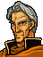
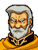
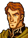
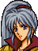
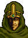

Narration
ノルデンを抜いたリーフたち『解放軍』は
ついにレンスター東門にたどりつく
しかし、そこにはノルデン砦以上の軍隊が
リーフたちを待ちうけていた
Opening 1

ニカラフ
反乱軍どもはまだ片付けられんのか！

はっ・・・
ケンプフの身勝手な行動のため
勝機を逃しました・・・
申し訳ございません！
くっ・・・ケンプフめ・・・
恩をアダで返しおって！
おまえの言うとおり
あの男は
国に送り返すべきであったな
いえ、私が甘かったのです
ですが、もう心配ありません
城の前面には私の装甲騎士団と
ムーア司教の魔道軍
敵の後方には
ラインハルトのゲルプリッター
さらに予備兵力として
シレジアの天馬騎士団を
待機させております
これだけの兵力をもってすれば
いかなる敵といえども
打ち破れるでしょう
そうか・・・
まあ、将軍の言うことだ
まちがいはあるまい
それと言い忘れていたが
サイアス司祭が立ち寄られるそうだ
旅の途中だが
力を貸してくれるらしい
あの天才軍師サイアスどのが？
それはまことですか！？
知らせでは
もう数時間もすれば到着するという話だ
わかりました
では、まず守りをかため
軍師殿が到着しだい
一気に攻勢をかけましょう
グスタフ侯はどうか
城内にてよい知らせをお待ちください
うむ、たのんだぞ、ニカラフ！
Opening 2

王子、これはいけませんな
敵の陣形には一分のスキもありません

どういうことだ？
問題は
北西に陣をしくシレジアの傭兵軍です
もしわれらが城に向かうとすれば
背後からおそわれることになります
兵を分けて
彼らに当たらせてはどうなんだ
すでに、兵の半数は
後方にいるラインハルト軍に対する
守りとしておいてきました
これ以上兵を分けるのは
得策ではありません
では、どうする？
シレジアの傭兵軍に
どのていどの戦意があるのか・・・
それが問題ですな・・・
Opening 3
では
作戦はおわかりいただけたかな？
ミーシャ将軍

承知しました・・・
では、もれのなきようお願いする
ところで・・・
なにか？
あなたの母上は
かつての内乱で逆賊シグルドによって
討たれたと聞いたが、まことか？
・・・・・・
それで、みずから志願して
帝国の傭兵になったというわけか？
母のことは関係ない
私たちは
国にいる飢えた子どもたちを
救うために働いている
パンやミルクを得る金がほしい
ただそれだけのことだ・・・
そうか・・・
いや、つまらぬことを言った
忘れてもらえればありがたい
・・・では、失礼する
Enemy turn 10 (1)
If Nikalaf is alive

ニカラフ将軍、久しぶりですね
おおっ、これはサイアス卿
おまちしておりました！
それで、戦況はいかがですか？
敵の攻撃が、思いのほかはげしく
少々てこずっております
ですが、軍神ともうたわれる
サイアス卿がいらしたのだ
兵の士気も一気に上がりましょう！
ラインハルト卿のゲルプリッターは
まだ到着しませんか？
敵の後衛を打ち破り
まもなく到着することでしょう
では、総攻撃に移りましょう
シレジアの傭兵軍にも
そのように伝えてください
はっ、承知いたしました！！
If Nikalaf is dead or captured
・・・戦況はいかがですか？
こ、これはサイアス様
・・・敵の攻撃が、思いのほかはげしく
少々てこずっております
ニカラフ将軍も・・・先ほど・・・
そうですか・・・
ですが、軍神ともうたわれる
サイアス卿がいらしたのです
これで
兵の士気も一気に上がりましょう！
ラインハルト卿のゲルプリッターは
まだ到着しませんか？
敵の後衛を打ち破り
まもなく到着することでしょう
では、総攻撃に移りましょう
シレジアの傭兵軍にも
そのように伝えてください
はっ、承知いたしました！！
(Saias takes his position)
Enemy turn 10 (2)
これはどういうことなんだ！？
敵の士気が一気に高まったようだが？

一番恐れていたことが起こりました
王子、一刻のゆうよもなりません
はやく退却のご命令を
どういうことだ、説明してくれ！
ヴェルトマーの
若き宮廷司祭にして天才軍師
サイアス卿が現れたのです
彼が戦場にある限り
われらに勝ち目はありません
そんな人物が帝国にいたのか？
アルヴィス皇帝の腹心中の腹心
アイーダ将軍の子です
彼女が謎の死をとげた後
ブラギの僧院に入れられていたとか・・・
・・・しかし、今退却すれば
多くの兵士を失うことになる
いったい、どうすればいいんだ・・・
Enemy turn 10 (3)

よし、今がチャンスだ
反乱軍を一掃するぞ！
川に橋をかけろ！
Enemy turn 12

クソッ
思わぬ足止めをくってしまったな
よし、全軍に突撃の命令を出せ！
ミュラー将軍
ラインハルト隊長はどうされたのですか？
イシュタル王女とともに
コノートに行かれた
理由はわからんが
王女のご様子がおかしかったからな
きっと心配されたのだろう
戦いを前にお姫様のお守りですか
こまったものですな・・・
口をつつしめ！
無礼ではないか！！
はっ！
失礼いたしました！！
だが、じっさい、困ったものだな・・・
Enemy turn 15 (1)

サイアス卿、こちらにおいででしたか！
イシュタル王女？
それにラインハルト卿まで
そんなにあわててどうなされたのです？
ユリウス殿下のご容態がおかしいのです！
高熱を発せられて・・・
ひどくうなされていらっしゃるの！
昔から体はお弱かったが
最近は特にひどくなりましたね
それで・・・ロプトの司祭たちは？
あのものたちは近づけておりません！
ではマンフロイ卿にも！？
どうしてですか？
それは宮廷司祭のサイアス様が
一番よくご存知でしょう？
私の心をおさっしください
・・・わかりました
私でお役に立つなら参りましょう
で、ユリウス殿下はどちらに？
コノートの私の部屋に・・・
なるほど・・・
では参りましょう、イシュタル王女
Enemy turn 15 (2)
なに、サイアス様がコノートへ？
まずいな・・・ここは守りを固めよう
川の橋を落とせ！
Talk: Karin → Misha

ミーシャ将軍
帝国は私たちシレジア人にとっても
憎い敵でしょう？
それなのにどうして
彼らの味方をするの！
私には
守らなければならないものがある
ただ、それだけです・・・
・・・守らなければならないもの？
あなたには関係のないことです
もう行きなさい
戦いが始まります
After seizing
なんとか城門は
打ち破ることができましたが
城内にはまだ多くの敵がおります
リーフ様、油断をなされぬよう
多少の無理をしてでも
一気にけりをつけるしかないだろう
城主のグスタフ侯爵は
ブルーム国王の片腕として
レンスターの人々を苦しめていた男だ
彼の命によって
今まで何人の人々が
命を落としたことか・・・
さよう
グスタフを討ち取り
その首を城門にさらすのです
情けは無用ですぞ
王子は君主としての
義務を果たさねばなりません！
If Talk: Karin → Misha happened and you seize while holding Misha captive
リーフ様
シレジアの指揮官を捕えておりますが
いかがいたしましょう？
会ってみたい
通してくれ
あなたがシレジア軍の指揮官？
情けを受けるつもりはない
時間のムダです、早く殺すがいい！
王子、無理です
シレジアの天馬騎士は何より名誉を尊ぶ
多くの部下を死なせた上
捕えられて生き恥をさらすことは
とてもたえられるものではありません
ここは望むままに
死なせてやるのが情けかと・・・
ドリアス伯爵
バカなことを言わないで！
ミーシャさん
あなたには守るものが
あったはずでしょう？
こんなところで死んでどうするのよ！
シレジアで待っている子供たちが
かわいそうだとは思わないの！
！
・・・どうしてそのことを？
あなたの部下だった人に聞きました
戦場に倒れていて
助けようとしたんだけど・・・
そのとき、彼女から教えられたの
私・・・知らなかった・・・
帝国の支配しているところで
そんなにも多くの人たちが
飢えていたなんて・・・
多くの子どもたちが・・・
やせ細って・・・死んでいく
だから、食べ物を手に入れたくて
帝国の傭兵になったと
その人は言ってたわ
・・・・・・
ミーシャどの
それは少しおかしいのではないか？
身近にいる子どもたちを救うために
他国の子どもたちを
犠牲にしてもいいものではないはずだ
帝国はトラキアで子供狩りをしている
やがてシレジアでも始まるだろう
そのとき
一体誰が子どもたちを守るのだ？
子供狩り・・・何のことですか？
あなたは知らないのか・・・
だったら、もう少し生きて
この現実を見てほしい
ぼくたちの苦しみや悲しみを
知ってほしい！
・・・ごめんなさい
・・・少し混乱しています
時間をください
もう少し、考えてみたいのです・・・
House upper area, left
.png)
よくこられたの
レンスター城内は広いゆえ
ばらばらになってしまい困るじゃろう
このレスキューの杖を
持ってゆきなされ
House upper area, right
.png)
ついに帝国の支配から
抜け出すことができるのですね
ああ、夢のよう・・・
がんばってください！
このワープの杖をさしあげます
帝国をおいはらってください！
House left area, left
.png)
ちょっと、そんな装備で
レンスターに攻めこむのかい？
本当に大丈夫？
このマジックリングをあげるからさ
せめてこれを使ってからにしなよ
House left area, right
レンスター城にはロプトの連中が
かなりいるらしいぜ
このせいすいをもっていきな
Church

・・・・・・

これ、サラ、どこへ行くのじゃ
・・・・・・
おお、これは解放軍の方か
この子がなにか言いましたかな？
あまりお気になさらんでくだされ
この子は時おり
おかしなことを口走ったりしての・・・
ちと不思議なところのある子なのじゃ
・・・行く・・・
行く？ どこへじゃ？
・・・行く・・・
この人といっしょに行く・・・
いっしょにと言うても
この方は軍隊の方じゃぞ・・・
これ、サラ、待ちなさい！
行く・・・
あたしをつれてって・・・
Nikalaf: battle quote
貴様らごときに
わしが倒せるものか！
さあ、かかってこい！
Nikalaf: defeat quote
むうっ・・・
なかなか・・・
やるではないか・・・ぐふっ
Nikalaf: release quote
(Cannot be captured)
Moore: battle quote

・・・・・・
Moore: defeat quote
・・・ロプト神よ・・・
新たな時代に・・・
この身を・・・ささげる・・・
Moore: release quote
・・・・・・
Misha: battle quote
私の邪魔をするのか！
Misha: defeat quote
フフ・・・私も・・・
ディートバ母様の・・・
ところへ・・・行くのね・・・
Misha: release quote
助けてくれたことには感謝する
だが
私は戦わなければならないのだ
Muller: battle quote
ゲルプリッターの恐ろしさ
とくと思い知れっ！
Muller: defeat quote
ぐうっ・・・
バカな・・・
われらが敗れるとは・・・
Muller: release quote
・・・甘いな・・・
Saias: battle quote
手を引きなさい・・・
あなたでは
私に勝てません・・・